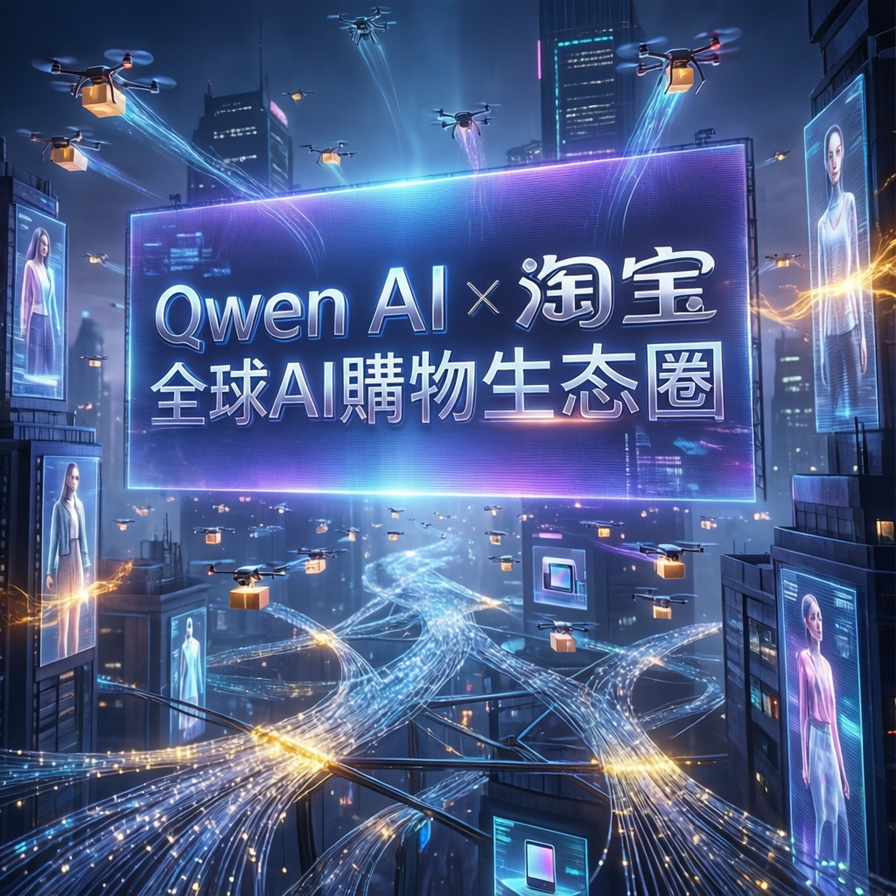

阿里巴巴旗下 Qwen 人工智能模型與淘寶平臺深度整合，標誌著全球最大規模的 AI 驅動電商生態系統正式誕生，開創智能購物新紀元

本次報導指出，人工智能技術在電商領域迎來重大突破。阿里巴巴集團宣佈將其自主研發的 Qwen 大語言模型與淘寶平臺全面打通，此舉被業界視為全球最大 AI 購物生態圈的正式啟動。
研究指出，這項整合將徹底改變消費者的購物體驗，從商品搜尋、個性化推薦到智能客服，全面導入生成式 AI 技術。數據顯示，該系統預計將影響數億活躍用戶的日常消費行為。
專家分析，Qwen AI 與淘寶的深度整合體現在三個核心層面。首先，智能商品理解技術能夠透過自然語言處理，精準解析用戶的模糊需求；其次，動態個性化推薦系統可根據對話上下文即時調整推薦策略；最後，多模態互動功能支援圖文並茂的購物導航。
業界觀察人士指出，此次整合將對全球電商產業產生深遠影響。研究數據顯示，導入 AI 技術的電商平臺平均可提升30% 以上的轉換率，並顯著降低客服人力成本。
值得注意的是，這項部署也使阿里巴巴在與國際競爭對手的較量中取得先機。相較於亞馬遜、Shopify 等平臺的 AI 應用，淘寶擁有更完整的供應鏈數據與消費者行為數據，為模型訓練提供特優勢。
Qwen AI 與淘寶的整合不僅是技術層面的升級，更代表著「AI 即服務」商業模式在電商領域的成熟落地。這項發展預示著未來電商平臺的核心競爭力將從「商品豐富度」轉向「AI 理解力」，能夠精準解讀用戶意圖的平臺將掌握下一世代的市場主導權。
隨著技術持續演進，專家預測 AI 購物助手將朝三個方向深化發展。預測式購物能力將使系統能在用戶明確表達需求前主動推薦；跨平臺整合則可能打通支付、物流、售後等全鏈路服務；而情感化互動設計將讓 AI 具備更自然的人機對話體驗。
本次報告總結，Qwen AI 與淘寶的戰略整合標誌著電商產業正式進入「智能代理」時代。隨著模型能力不斷提升，預計未來三年內，AI 將承擔超過七成的消費者購物決策輔助工作，徹底重塑人們的網購習慣與商業生態。
Qwen 接入社淘寶與天貓全部商品目錄，用戶毋須輸入關鍵字即可用自然語言完成整個購物流程。
用文字或語音描述需求，AI 代理即可比較價格、虛擬試穿、追蹤 30 天低價並完成落單。
交易、付款、物流、退換貨全部由 AI 協調完成，人類只在最後一步確認授權。
截至 2026 年 2 月，約 1.4 億用戶透過 Qwen 完成首次 AI 購物，涵蓋外賣、雜貨及訂票。
「AI 代理將成為超級應用演進的基礎，成功關鍵在於深度整合支付、物流及社交互動。」
— Charlie Dai，Forrester 副總裁兼首席分析師